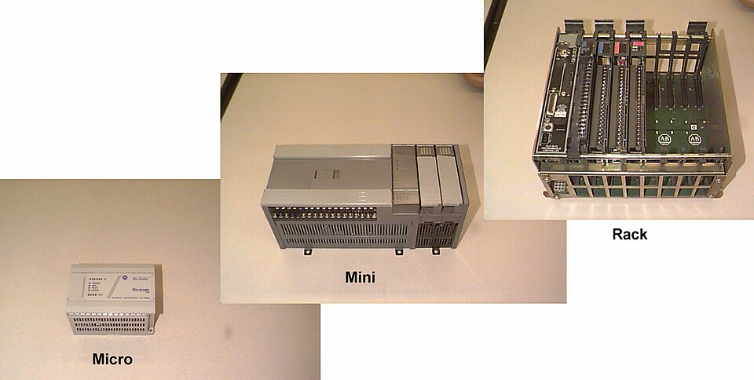

① 데이터 자동 수집
어려움
구상 중

한 줄 요약
PLC·비전 컨트롤러·검사 결과 파일에서 생산 데이터를 사람 손 없이 자동으로 모아 DB에 쌓는 수집기
만들게 된 이유
생산 데이터가 PLC 레지스터, 비전 컨트롤러 결과 파일, 검사 이미지 폴더, 수기 입력 시트로 흩어져 있다. 매번 사람이 파일을 복사하고 엑셀에 옮겨 붙이다 보니 시간이 들고, 누락·중복·입력 실수가 생긴다. 모든 데이터를 정해진 형식으로 한곳에 자동으로 모아야 뒤의 분석과 보고서도 자동화할 수 있다.
주요 기능
- PLC 통신 수집: 투입·양품·불량 카운트, 설비 상태 비트를 주기적으로 읽기 (LS / Panasonic)
- 폴더 감시 수집: 비전 검사 결과 CSV·이미지가 새로 생기면 즉시 읽어 들이기
- 데이터 정규화: 날짜·교대·모델·라인 기준의 공통 형식으로 변환 후 DB 저장
- 중복·누락 체크: 같은 파일 재수집 방지, 수집이 끊긴 시간대 표시
- 수집 상태 화면: 소스별 마지막 수집 시각, 성공/실패 건수, 오류 로그
- 통신 끊김 시 자동 재연결 및 로컬 임시 저장 후 재전송
대상 사용자
생산 데이터를 매일 정리하는 공정·품질 엔지니어, 그리고 이 데이터를 받아 쓰는 분석·보고서 시스템(②, ③)
사용할 기술 / AI 도구
- Python
- pymodbus / XGT FEnet
- MEWTOCOL
- watchdog
- pandas
- SQLite
- APScheduler
- Claude
AI에게 줄 첫 프롬프트 초안
Python으로 생산 데이터 자동 수집기를 만들어줘.
[수집 소스]
1. LS산전 XGK PLC: 1초마다 D 영역 레지스터(투입/양품/불량 카운트) 읽기
2. 지정 폴더 감시: 비전 검사 결과 CSV가 생기면 즉시 읽기
(CSV 컬럼: 시간, 모델, 판정(OK/NG), 불량코드)
[처리]
- 모든 데이터를 공통 형식(timestamp, line, model, shift, input, ok, ng, defect_code)으로 변환
- 교대 구분: 주간 08:00~20:00, 야간 20:00~08:00
- SQLite에 저장, 이미 수집한 파일은 다시 읽지 않기
- 통신 끊김 시 5초 간격 재연결, 오류는 로그 파일에 기록
[화면]
- Flask 웹 페이지 1장: 소스별 마지막 수집 시각, 성공/실패 건수, 최근 오류 10건
- 화이트 배경 + 네이비(#000080) 테마
설정값(PLC IP, 폴더 경로, 주기)은 config.json으로 분리하고,
즉시 실행 가능한 전체 완성 코드로 줘.참고 자료
메모
- PLC 통신 방식(XGT 전용 프로토콜 / Modbus TCP, Panasonic MEWTOCOL) 설비별 확인 필요
- 1단계는 폴더 감시 수집부터 시작 → 안정화 후 PLC 직접 통신 추가
- DB 테이블 구조를 먼저 확정해야 ② 분석, ③ 보고서가 같은 데이터를 바라볼 수 있음